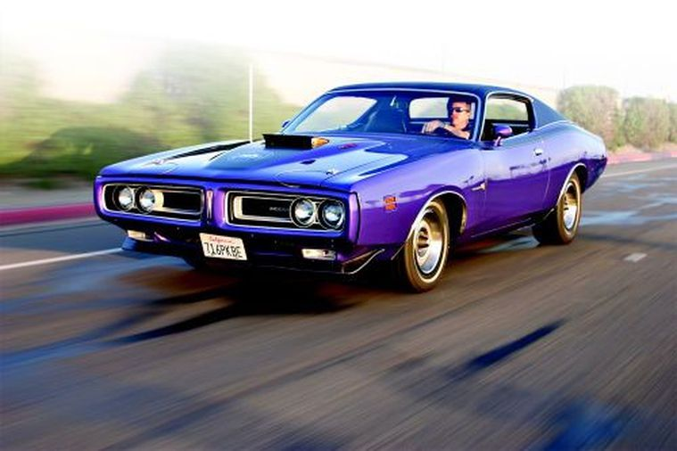
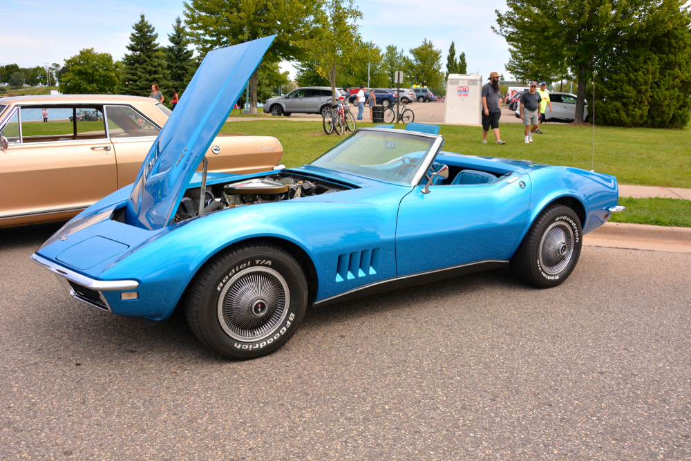

| Datos |
Generacion | Pasion sobre ruedas |
Evolucion |
Tipos Autos |
Historia |
carros clasicos |
Arte |
Carros |
Videos |
Formulario | Coches deportivos |
Las opciones de motor disponibles para el Barracuda se mantuvieron igual que el año anterior, con el motor estándar de 145 caballos de fuerza, 225 CID inclinado de seis cilindros. A partir de ahí, los compradores de Barracuda podrían actualizar al 318 CID V8 de 230 caballos de fuerza. Adicionales también se podían comprar un motor 340 CID V8 que producía 275 caballos de fuerza y el 383 CID V8, un motor de 4 barriles conocido como Super Commando. Ese motor tenía una potencia de 300 caballos de fuerza.
El Mustang es un muscle car icónico y una de las variantes más importantes y respetadas del Mustang fue el Boss 429. A fines de la década de 1960, Ford simplemente no tenía el poder para competir con el 426 Hemi que Chrysler usaba en NASCAR, por lo que tuvo que hacer algo para seguir siendo competitivo. La respuesta fue construir un nuevo motor que pudiera competir, y se comenzó a trabajar en el Boss 429. El motor nunca habría llegado a los vehículos de producción, pero las reglas de homologación de NASCAR requerían que un mínimo de 500 autos clásicos estuvieran equipados con el motor y vendidos al público en general para su uso.
Este es uno de los autos clásicos que fue producido entre 1964 y 1973 por Pontiac. Gracias a su carrocería compacta y a su voluminoso motor fue bautizado con las siglas GTO. Este es uno de los autos clásicos más famosos ya que su carrocería es estilo fastback y mantiene su impulsor de 400 pulgadas cúbicas, lo que le da 360 HP de potencia. La palanca de transmisión está muy bien colocada inmediatamente al lado del muslo del conductor. Tiene el famoso enlace Hurst, que es increíblemente corto e infaliblemente preciso. La primera tendencia del conductor de un automóvil deportivo es siempre tratar de hacer que la puerta sea más ancha de lo que es y que el patrón de cambios sea más complicado.
Para el año 1967, Ford ofreció el Mustang con su 390 V8 probado y potente, que tiene un diámetro y carrera de 4.05 x 3.78 pulgadas. Ford también construye un 428 V-8 en el mismo bloque con un diámetro y carrera de 4,13 x 3,98 pulgadas. El GT500 es uno de los autos clásicos que no es un coche de carreras, aunque sí tiene algunas características, sobre todo en su motor, que hace que lo pueda parecer mientras lo conduces. ¡Siete litros en un Mustang! El primer prototipo de ingeniería del GT500 fue el auto más rápido en recorrer el sinuoso circuito de manejo de Ford, a excepción de los GT40, por supuesto. Y el mismo auto cortó un cuarto de milla en 13.6 segundos a 106 mph. En definitiva es un ¡súper auto!

Aunque el Chevrolet Chevelle SS 396 de 1969 era un muscle car para el hombre común de ese momento, hay que destacar que estaba configurado de una manera muy inteligente haciendo que su rendimiento fuese tan bueno que era poco común en los autos clásicos del momento. Las opciones de transmisión para su motor L78 comenzaron con la manual estándar de tres velocidades y dos manuales de cuatro velocidades, ya sea la relación amplia M20 o la M21 o relaciones cerradas M22 de servicio pesado. Mientras el resto de la industria instalaba palancas de cambio Hurst durante esa época, Chevrolet insistió en usar palancas de cambio y articulación Muncie. De esta forma, por primera vez, Chevrolet ofreció la transmisión automática de tres velocidades M40 Turbo Hydra Matic con el L78. Para el M40, la ubicación estándar de la palanca de cambios estaba en la columna. Cuando se ordenó la consola opcional, la palanca de cambios se movió al piso, algo distinto al resto de autos clásicos. La popa era un diferencial de servicio pesado con una relación trasera de 8,875 pulgadas y una relación estándar de 3,55:1, con marchas opcionales que iban desde 3,07:1 hasta una torsión del bastidor de 4,88:1.

Yenko Camaros también recibió COPO 9737 Sports Car Conversion, que incluía un velocímetro de 140 mph, una barra estabilizadora delantera de 13/16″ de mayor diámetro y ruedas Rally de 15 x 7 con neumáticos E70 con letras blancas en relieve. El Camaro Yenko es una versión modificada del original Chevrolet Camaro y fue diseñada por Yenko Chevrolet, de ahí su nombre de Yenko Super Camaro. Tenía un caballaje de 450 con el que demostraba su potencia. Se hicieron exacta y únicamente 104 de estos coches, lo que aumenta su valor en la venta de autos clásicos y apreciación en el mercado actual.

Dodge produjo una edición limitada llamada Super Bee desde 1968 hasta 1971 convirtiéndose en uno de los autos clásicos más icónicos de la época. El Dodge Super Bee está diseñado a partir del Dodge Coronet coupé de dos puertas y de ahí retoma su estilo de líneas. Aunque hubo varias versiones de estos autos clásicos, la Super Bee es la más conocida. Las divisiones de GM lo habían practicado durante años, pero se necesitó el fervor competitivo de los muscle cars y autos clásicos para desencadenar una rivalidad entre los hermanos Dodge y Plymouth. El Dodge Super Bee de 1968 llevaba los colores de la división Scat Pack de Mopar. Plymouth había golpeado primero, con la presentación en otoño de 1967 del Road Runner de 1968, económico y musculoso.

El Chevrolet Corvette C3 Stingray es uno de los autos clásicos deportivos producidos por General Motors en dos tipos de carrocería: coupé y convertible. Durante su producción, se buscaba conseguir un mejor reparto del peso en comparación a los modelos anteriores, es por esto que la batería fue instalada detrás de los asientos. Este auto clásico cuenta con un extraordinario caballaje de 600 HP. Si tuviéramos que nominar a uno de los autos clásicos de la camada de Corvette, muchos señalarían con el dedo al C3. El sexy C2 siempre iba a ser un acto difícil de seguir y el C3 utilizó una serie de piezas remanentes y las utilizó durante mucho tiempo. Sin embargo, en términos de unidades vendidas, el C3 es el uber-Vette indiscutible.

Los diferentes modelos de autos clásicos de los Plymouth Barracuda comenzaron con la versión original Valiant. El Barracuda de primera generación fue principalmente famoso por su distintivo vidrio trasero envolvente, pero también por ser el primer vehículo deportivo y compacto de Plymouth.. Pero fue con el Plymouth Hemi Cuda que alcanzó la cima de la popularidad con su súper renovado Cuda, la tercera generación de este modelo. Sin rival para el popular Ford Mustang, el Barracuda fue rediseñado para 1967 cuando las versiones sedán y convertible se unieron al ya familiar fastback. Aunque todavía está basado en Valiant, el Barracuda de segunda generación recibió una nueva chapa y motores más grandes, incluido el 440 Commando V-8 de 7.2 litros de Chrysler y el HEMI 426 V-8 de 7.0 litros.

El Mach 1 es otro de los autos clásicos ideado por Ford con la intención de cambiar de target y comenzar a atraer al público más joven para competir con General Motors y su Chevrolet Camaro, un muscle car con características similares. Sin duda alguna, los autos clásicos siempre serán una alternativa de colección para aquellos aman los autos, sin embargo, existen autos para todo tipo de usuarios, es por esto que Kavak ofrece un extenso catálogo de opciones de autos seminuevos al alcance de un clic. De igual manera si piensas en vender tu auto para ir en busca de autos clásicos, también puedes hacerlo con Kavak.